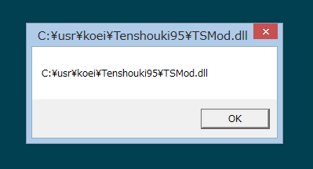
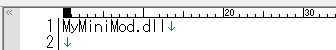

前の解説では、実際に｢一般MOD｣としてMyMiniMod.dllを作成してみました。
枠組みの基本的な感覚は掴めたと思います。
ここでは、｢一般MOD｣の補足的な機能の説明を行います。
さて、｢一般MOD｣は、ファイル単体では動作しません。
「基盤Mod」が呼び出すことで機能しています。
呼び出しているのは、
呼び出しています。
そして、どちらが呼び出したのかを確認することが出来るようになっています。
以下のようにプログラムを書いてみましょう。
//--------------------------------------------------------
void WINAPI On_初期化(HANDLE 呼び出し元ハンドル) {
// パスを受け取るためのバッファ
char szFullDLLName[1024] = "";
// DLLハンドル(実際にはメモリ上のアドレス)⇒そやつのフルネームを得る。
GetModuleFileNameA((HMODULE)呼び出し元ハンドル, szFullDLLName, sizeof(szFullDLLName)-1);
// メッセージボックスに出す。
MessageBox(NULL, szFullDLLName, szFullDLLName, NULL);
MessageBox(NULL, "初期化", "初期化", NULL);
}
これを実行すれば、以下のようなダイアログが出ます。

よって、
呼び出し元が、TSMod.dllなのか、PluginMod.dllなのか、
フルパスまで含めて調べることが出来る、ということとなります。
ということは、TSModから起動された時と、PluginModから起動された時で、
挙動を振り分けることが可能であるとわかるでしょう。
これは一定以上複雑なプログラムを作る際には、必要なシーンが出てくる機能です。
(特にTSModの機能との衝突を避けるという意味で)
もうひとつ大切な機能があり、｢読み込む対象の『一般MOD』を手動に切り替える｣という機能があります。
天翔記フォルダに、｢PluginMod.ini｣というファイルを作成し、中身を空っぽにしてみましょう。
そうすると、｢一般MOD｣は何一つ実行されません。
これは、手動読み込みに切り替えたのに、読み込む対象となるDLLが記載されていないためです。
では、PluginMod.iniを開き、｢MyMiniMod.dll｣と記述してみましょう。

天翔記を実行すると、 ｢MyMiniMod.dll｣が実行されることがわかるはずです。
では次の行に｢MyMaxMod.dll｣と書いてみましょう。
天翔記フォルダの中に、｢MyMaxMod.dll｣があれば、｢MyMiniMod.dll｣と｢MyMaxMod.dll｣が、｢その順番｣で、実行されます。
MyMaxMod.dllが無いのであれば、その部分は無視されます。
このように、｢PluginMod.ini｣によって、複数のDLLを記述し、順番通りに実行させることが可能となっています。
ただし、これはあくまでも開発者用のデバッグ機能です。
この機能を使えば、
読み込む｢一般MOD｣をいとも簡単に絞ったり変えたりできるため、何かトラブルが起きた際、問題を絞り込みやすいはずです。
この機能の順番実行機能などを利用したいがために、各ユーザーにPluginMod.iniを配ったり作らせたりすることは、
その後、自動読み込み機能が、完全に失われてしまため、 大いにトラブルの元となります。
よってこの機能に依存した｢一般MOD｣を配布することは、
よほどの事情がない限り、極めて非推奨なものとします。